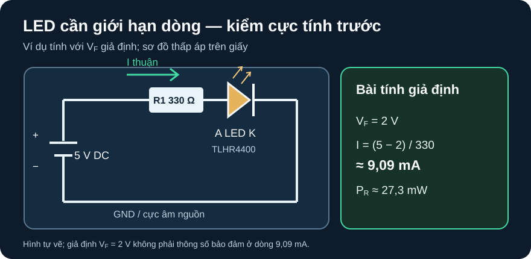

Các Họ Diode
Đọc đúng đại lượng và điều kiện đo trước khi dùng một diode cho chỉnh lưu, kẹp xung, phát hay thu ánh sáng.
- Chọn đúng họ diode cho bảy nhiệm vụ và giải thích vì sao một họ khác không thay thế trực tiếp.
- Đọc
VRRM,IF(AV),VF, phục hồi, rò và thông số xung với đúng điều kiện nhiệt/dòng/thời gian. - Tính dòng/công suất mạch LED có điện trở hạn dòng và phân biệt kết quả giả định với giới hạn datasheet.
- Lập bảng kiểm điện áp ngược, dòng, nhiệt, cực tính và thông số còn thiếu trước khi chọn part.
Tiếp sau D11–D12: các bài D đã giới thiệu ký hiệu và một vài ứng dụng. Ở đây, cùng hình diode trên sơ đồ có thể là công nghệ rất khác: giá trị điện áp ngược, dòng trung bình, đỉnh xung, rò, phổ ánh sáng và điều kiện đo phải đọc ở mã part, không suy từ tên gọi “diode”.
1. Bảy họ, bảy câu hỏi chọn khác nhau
| Họ/vai trò | Cần kiểm | Ví dụ nguồn hãng và giới hạn phạm vi |
|---|---|---|
| Chỉnh lưu công suất: đổi dòng xoay chiều/đường hồi dòng ở tần số phù hợp | VRRM, IF(AV) theo nhiệt/cách lắp, IFSM theo dạng xung, VF, nhiệt. | Vishay 1N4001–1N4007, Doc. 88503 Rev. 29-Apr-2020, tr. 1–2: 1N4001 VRRM=50 V, 1N4007 1000 V; IF(AV)=1 A với dây dài 9,5 mm ở TA=75 °C. Không chuyển 1 A sang mọi PCB/nhiệt độ. |
| Switching tín hiệu: mạch kẹp/chuyển trạng thái nhỏ | Thời gian phục hồi với điều kiện thử, dòng liên tục so dòng trung bình, VR/VRRM. | Vishay 1N4148, Doc. 81857 Rev. 1.6, tr. 1–2: VRRM=100 V; Fig. 2 IF–VF là đường typical, không là VF tối đa được bảo đảm. |
| Schottky: chỉnh lưu/hồi dòng thấp áp khi rò và áp ngược phù hợp | VRRM thường phải xem sát hơn, VF ở dòng/nhiệt cụ thể, dòng rò nhiệt cao, tổn hao. | Vishay 1N5819 trong họ 1N5817–19, Doc. 88525 Rev. 01-Jul-2020, tr. 1: VRRM=40 V, VF(max)=0,600 V tại 1 A với xung 300 µs/duty 1%; không phải 0,600 V tại mọi điểm làm việc. |
| Zener: tham chiếu/kẹp song song gần một vùng dòng quy định | VZ tại dòng thử, vùng dòng vận hành, dung sai, công suất và nhiệt; thêm điện trở hạn dòng. | BZX79 series, PDF trên Nexperia nhưng bìa NXP, 27-Feb-2002, Table 1–2 tr. 3–6 ghi các VZ theo dòng thử; tài liệu lịch sử này không xác nhận tình trạng mua mới. |
| TVS: kẹp xung quá độ với dạng xung xác định | VR stand-off, VBR tại IT, VC tại Ipp, năng lượng/đỉnh xung và PCB. | Littelfuse SMBJ, Rev. JC.07/04/25 v4, tr. 1–2: “600 W” ứng với xung 10/1000 µs; SMBJ5.0A có VR=5,0 V, VBR=6,40–7,00 V, VC(max)=9,2 V tại Ipp=65,3 A. TVS không kẹp rail đúng 5,0 V. |
| LED: phát ánh sáng khi được cấp dòng thuận | Cực anode/cathode, IF, VF tại dòng/nhiệt, công suất, quang thông và điều kiện đo quang. | Vishay TLHR4400 đỏ, Doc. 83006 Rev. 3.8, tr. 1–2: VF typ=2 V, max=3 V tại IF=20 mA, Tamb=25 °C; độ sáng nêu ở 10 mA nên không lấy độ sáng đó cho dòng khác. |
| Photodiode: nhận quang, sinh dòng phụ thuộc ánh sáng | Phổ/bước sóng, bức xạ, dòng tối, phân cực, mạch chuyển dòng–áp. | Vishay BPW34 PIN, Doc. 81521 Rev. 2.1, tr. 1–3: đáp ứng phổ và dòng quang có điều kiện; VR(max)=60 V. Không suy dòng dưới “ánh sáng phòng” chưa định nghĩa. |
Đọc ký hiệu đúng đại lượng: VRRM là đỉnh áp ngược lặp lại của rectifier; VR của TVS là áp chờ, VBR là áp đánh thủng ở dòng thử, VC là điện áp kẹp tại dòng xung chỉ định. IF(AV) là dòng thuận trung bình theo điều kiện nhiệt/lắp, không thể thay bằng IFSM là đỉnh xung không lặp lại. Các cột trong tài liệu Littelfuse và Vishay ở bảng trên minh họa sự khác biệt này.
2. Ví dụ giải: LED đỏ với R hạn dòng

VF=2 V chỉ là giả định luyện tính.VF tham khảo Vishay TLHR4400, Doc. 83006 Rev. 3.8, bảng LED đỏ tr. 2. Mở hình lớn.Mô tả mạch bằng chữ
Đầu dương của nguồn DC lý tưởng 5 V nối R1 330 Ω. Đầu kia R1 nối anode LED TLHR4400. Cathode LED nối GND, là cực âm cùng nguồn. Không có nhánh khác. Mũi tên dòng thuận đi từ nguồn qua R1, LED rồi trở về nguồn. Sơ đồ không mô tả driver LED, pinout module hay thông số nguồn thật.
- Đặt điều kiện: nguồn 5 V cố định, R1 đúng 330 Ω, LED được mô hình bằng sụt áp thuận cố định
VF=2 Vtại dòng sắp tính. Đây là giả định học tập. Datasheet TLHR4400 chỉ nêu 2 V typical và 3 V maximum tạiIF=20 mA,Tamb=25 °C; không bảo đảm 2 V ở 9 mA. - Áp trên R:
VR=5−2=3 V. Dòng:I=VR/R=3/330=0,00909 A≈9,09 mA. - Công suất R:
PR=I²R=VR²/R=9/330≈0,0273 W=27,3 mW. Công suất LED trong mô hình là2×0,00909≈18,2 mW. - Kiểm điều kiện còn thiếu: nếu lấy
VF=3 Vchỉ như một kịch bản tính khác, dòng là2/330≈6,06 mA, không phải cận được hãng bảo đảm ở 9 mA. Cần dải nguồn, dung sai R, đườngIF–VF, dòng/quang thông mong muốn, nhiệt và part R thật để duyệt phần cứng.
3. Hoạt động tái lập: so model lý tưởng với đường cong thực
Dựng bảng cho mạch 5 V, R=330 Ω với các giá trị
VF giả định = 1,8; 2,0; 2,2; 3,0 V. Công thứcI=(5−VF)/330,PR=(5−VF)²/330. Đây là độ nhạy theo giả định, không phải đặc tuyến TLHR4400.Để học sự khác biệt loại diode, mở Vishay 1N4148 Fig. 2 và Vishay 1N5817–19 Fig. 3; ghi trục, nhiệt độ và điều kiện đo của đường
IF–VF. Chọn hai dòng trong vùng đồ thị rồi đọc khoảng VF, đánh dấu số đọc bằng mắt là typical và không dùng thay max. Nếu dùng SPICE, ghi chính xác tên file model, phiên bản, cách mắc hai cực và chạy DC sweep cùng điều kiện; không tuyên bố đã chạy nếu không lưu netlist/waveform.Điền bảng sàng lọc ba mục: ứng dụng, đại lượng cần tra, điều kiện thử. Với đề bài chặn 30 V ngược và dòng tải chưa biết, 1N4001
VRRM=50 Vvà 1N5819VRRM=40 Vchỉ qua cổng áp ngược danh định trên giấy; chưa qua dòng, nhiệt, rò, xung hay tốc độ.
| VF giả định | I = (5−VF)/330 | PR = (5−VF)²/330 |
|---|---|---|
| 1,8 V | 9,70 mA | 31,0 mW |
| 2,0 V | 9,09 mA | 27,3 mW |
| 2,2 V | 8,48 mA | 23,8 mW |
| 3,0 V | 6,06 mA | 12,1 mW |
Chưa có mã/revision nguồn và điện trở, mức áp cực đại, BOM, cách mắc thực tế hay người duyệt. Vì vậy mạch LED ở đây chỉ là ví dụ tính; trước khi lắp phải xác nhận cực anode/cathode của part, giới hạn dòng/điện áp, công suất R theo nhiệt, nguồn thấp áp cách ly và cách đo. Với diode hồi dòng tải cảm, cần biết dòng cuộn, năng lượng, dạng xung, tốc độ lặp và đường kẹp; không dùng riêng dòng IF(AV) để phê duyệt.
VF=2,1 V. Tính dòng và công suất R. Vì sao không thể gọi kết quả là dòng được bảo đảm của TLHR4400?VR=5,0 V, VBR=6,40–7,00 V, VC(max)=9,2 V tại Ipp=65,3 A theo Littelfuse. Người học nói “mọi xung đều bị kẹp đúng 5 V”. Chỉ ra hai lỗi trong câu đó.1. VR=3,3−2,1=1,2 V; I=1,2/220≈0,00545 A=5,45 mA; PR=1,2²/220≈0,00655 W=6,55 mW. VF=2,1 V là dữ liệu giả định; datasheet TLHR4400 cho typical/max tại 20 mA, không ở 5,45 mA, và nguồn/R cũng còn dung sai.
2. VR=5 V là áp chờ, không phải áp kẹp; VC liên quan một dòng và dạng xung thử cụ thể, không “mọi xung”. Tại điều kiện nêu, max đã là 9,2 V. Còn phải kiểm năng lượng/dạng xung, nhiệt và tải được bảo vệ.
Rubric 4 điểm: 1 điểm đặt sơ đồ/cực tính và giả định; 1 điểm công thức, đơn vị; 1 điểm 5,45 mA/6,55 mW cùng phân biệt ba điện áp TVS; 1 điểm giới hạn nguồn hãng/dòng/nhiệt/xung.